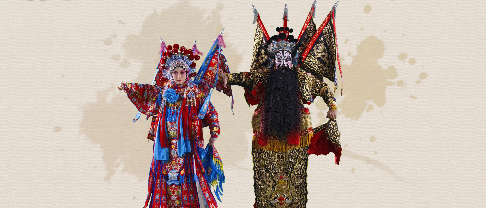
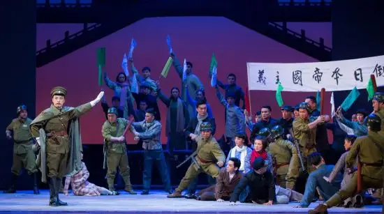
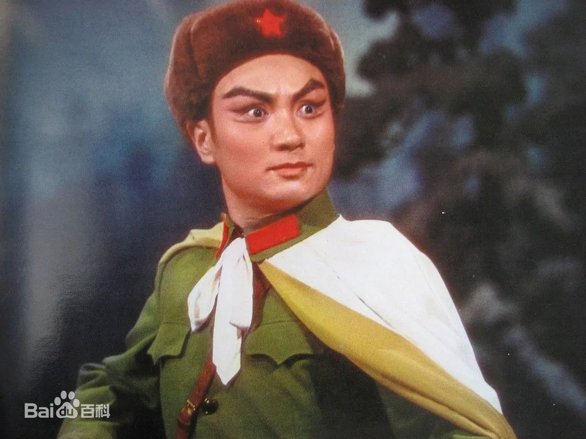
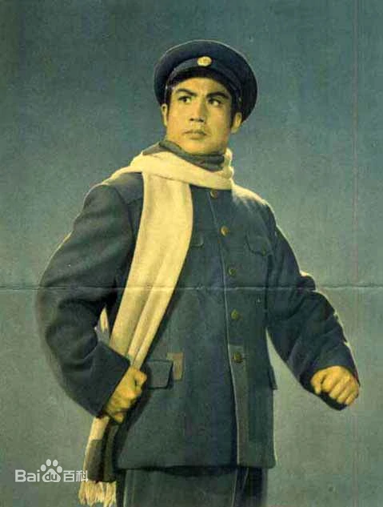
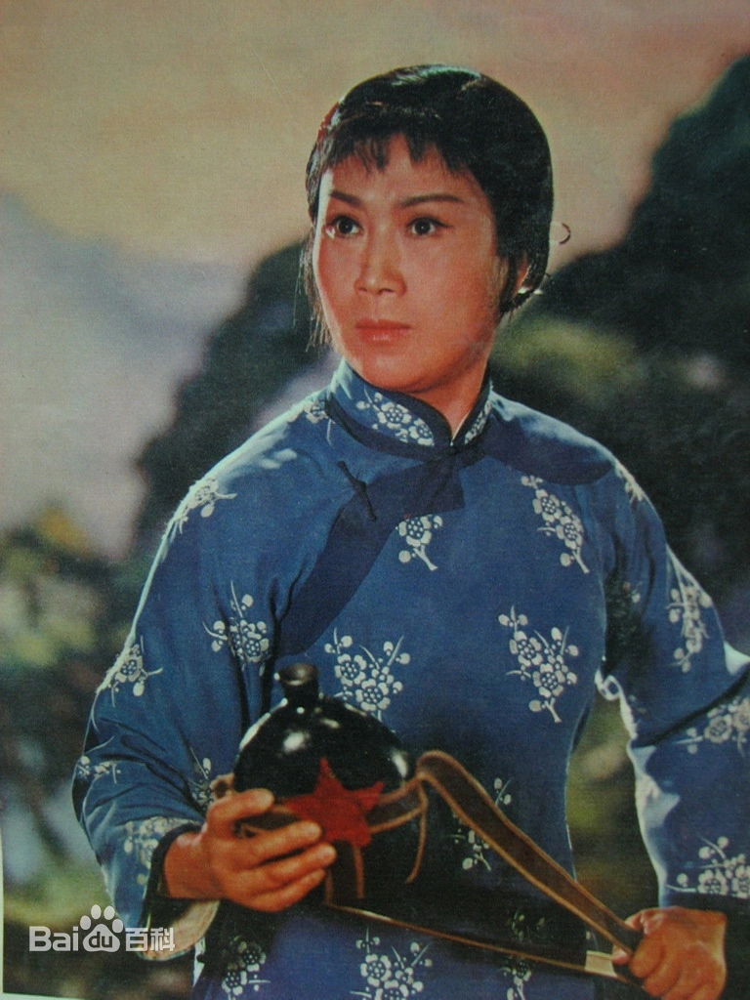
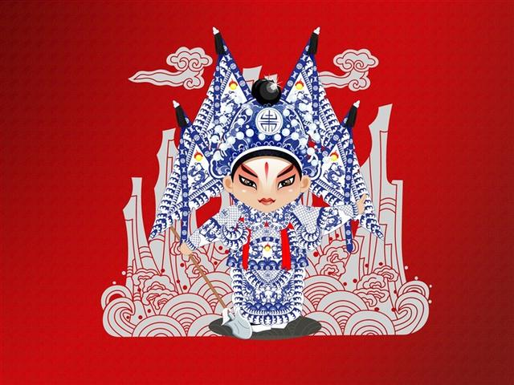

现代京剧

现代京剧简介:
广义地说，五四运动之后的所有反映现实生活的京剧都可视为现代京剧。狭义地说，在中华人民共和国成立之后，在双百方针指导下，通过戏曲改革运用历史唯物主义观点创作的反映社会现实生活的新京剧就是现代京剧。
代表曲目



发展:
建国以后，尤其是文革期间，党提出，帝王将相，才子佳人都是封建，不能演，在江青的指导下，首先排出了《红灯记》，《智取威虎山》，《海港》等京剧和《白毛女》等话剧，共八部，称为八个革命样板戏，以后又出了《杜鹃山》等，大多都是一个模式，被称作现代戏的起源。 新中国成立以后,京剧被正式列为国粹,当时为了宣传新生的人民共和国,所以采取了这种人民大众在当时都比较喜闻乐见的艺术表演形式,文化大革命期间排演了一大批有深刻影响的剧目.例如:《海瑞罢官》、《红灯记》、《沙家浜》、《智取威虎山》等，以表现新生事物和宣传国家政策为主要内容。
京剧小常识

京剧的乐队称做“场面”或“文武场”。其中，管弦乐部分叫做“文场”；打击乐部分叫做“武场”。文场中的乐器有：京胡、京二胡、月琴、三弦、唢呐、海笛、笙等。武场中的乐器有：鼓（单鼙）、板、大锣、小锣、铙钹等。在文武场中，鼓板由一人演奏，在乐队中起着领奏或指挥的作用。
关注中国京剧艺术团